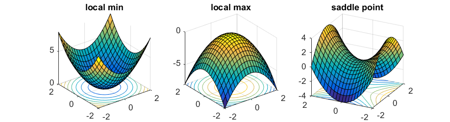
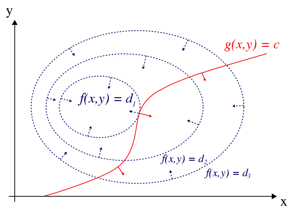

2. Maximum Likelihood Estimation#
This chapter is adapted from AM207 (Harvard, Fall 2021). Watch the recorded lecture.
In this chapter
A Motivating Example
A Statistical Model for a Coin Flip
Maximum Likelihood Estimation
Convex Optimization: Constrained and Unconstrained
Properties of MLE
Uncertainty Quantification
2.1. A Motivating Example#
A Simple Betting Game#
I propose to you that we play a betting game: I toss a coin, if the coin lands heads up then you will pay me \(\$20\), otherwise I will pay you \(\$20\).

Question: What information do you need to determine if this will be a profitable game for you to play?
Estimating the “Bias” of a Coin#
You might want to determine if my coin is a “trick” or “biased” coin before betting your money. A common way to test a coin for bias is to toss this coin \(N\) number of times and count the number of heads, \(H\). The fraction
is one way to quantify the probability of the coin to land heads up on any given toss.
Alternatively, we can interpret this fraction to represent the fraction of heads that would appear in a large (infinite) number of such experiments.
Question 1: Is this estimate of the bias valid? I.e. does \(\frac{H}{N}\) accurately capture the property of interest?
Question 2: Is this the “best” way to estimate the bias? For example, is the quantity
an equally valid or better estimate of the bias?
2.2. A Statistical Model for a Coin Toss#
Likelihood for a Coin Toss#
We can formally model the outcome of the single toss of a coin by a Bernoulli distribution
where \(\theta\) is the probability that the outcome \(Y\) will be heads.
Question: what assumptions does this statistical model expose?
After \(N\) number of independent tosses of an identical coin, the probability (or likelihood) of observing \(Y=H\) number of heads is
That is, \(Y\) is a random variable with a binomial distribution \(Y \sim Bin(N, \theta)\).
We see that the fraction \(\frac{H}{N}\) from our empirical experiment is an estimate of the parameter \(\theta\) of the binomial distribution \(Bin(N, \theta)\). Now that we have a statistical model, we can give formal justification for why our estimate is desirable (or undesirable).
2.3. Maximum Likelihood Estimation#
Parameter Estimation: Maximum Likelihood#
Let \(Y_1, \ldots, Y_N\) be independently and identically distributed with \(Y_n \sim p(Y|\theta)\), where \(p(Y|\theta)\) is a distribution parameterized by \(\theta\) (\(\theta\) can be a scalar, a vector, a matrix, or a n-tuple of such quantities). The joint likelihood of \(N\) observations, \(y_1, \ldots, y_N\), is
Note that we use upper-case letters \(Y_n\) to represent random variables and lower-case \(y_n\) to represent specific observed values of those variables.
The joint likelihood quantifies how likely (or probable, if \(Y\) is discrete) we are to observed the data assuming the model \(\theta\). When we consider the joint likelihood as a function of \(\theta\) (that is, treat the observed data as fixed), the \(\mathcal{L}(\theta)\) is called the likelihood function.
The maximum likelihood estimate of \(\theta\) is defined as
Recall that in Chapter 1 we gave some intuitive justification for the validity of the MLE.
Maximizing Likelihood is Equivalent to Maximizing Log-Likelihood#
Frequently, the likelihood function is complex and so it’s often preferable to work with the log of the likelihood function. Luckily, maximizing the likelihood is equivalent to maximizing the log likelihood due to the following fact.
Theorem: For any \(f: \mathbb{R}^D \to \mathbb{R}\), we have that \(x^* = \underset{\theta}{\mathrm{argmax}}\; f(x)\) if and only if \(x^* = \underset{\theta}{\mathrm{argmax}}\; \log (f(x))\).
Going deeper: Aside
Proof: Recall that the monotone property of the \(\log: \mathbb{R} \to \mathbb{R}\) function:
Suppose that \(x^* = \underset{\theta}{\mathrm{argmax}}\; f(x)\), then for all \(x\in \mathbb{R}^D\) we must have that \(f(x) \leq f(x^*)\). Hence, it follow from the monotonicity of \(\log\) that \(\log(f(x)) \leq \log(f(x^*))\), for all \(x\in \mathbb{R}^D\). So, by definition, we have that \(x^* = \underset{\theta}{\mathrm{argmax}}\; \log (f(x))\).
Now suppose that \(x^* = \underset{\theta}{\mathrm{argmax}}\; \log (f(x))\), for all \(x\in \mathbb{R}^D\). That is, for any \(x\in \mathbb{R}^D\), we have that \(\log (f(x)) \leq \log (f(x^*))\). It then follows from the monotonicity of \(\log\) that \( f(x) \leq f(x^*)\) for all \(x\in \mathbb{R}^D\). By definition, we conclude that \(x^* = \underset{\theta}{\mathrm{argmax}}\; f(x)\).
2.4. Convex Optimization: Constrained and Unconstrained#
Introduction to Optimization: Types of Optima#

Stationary Points#
The instantaneous rate of change, at \(x=x_0\), of a differentiable function \(f: \mathbb{R} \to \mathbb{R}\) is given by it’s first derivative at \(x=x^*\), \(\left.\frac{df}{dx}\right\vert_{x^*}\).
For a multivariate differentiable function \(f: \mathbb{R}^D \to \mathbb{R}\), the gradient of \(f\) at a point \(x^*\) is a vector consisting of the partial derivatives of \(f\) evaluated at \(x^*\):
Each \(\left.\frac{\partial}{\partial x^{(1)}}\right\vert_{x^*}\) compute the instantaneous change of \(f\) at \(x=x^*\) with respect to \(x^{(1)}\).
The gradient is orthogonal to the level curve of \(f\) at \(x^*\) and hence, when it is not zero, points in the direction of the greatest instantaneous increase in \(f\).

A point \(x=x^*\) at which the first derivative or gradient is zero is called a stationary point.
Characterization of Local Optima#
A local optima must be a stationary point, but a stationary point need not be a local optima!


To check that a stationary point is a local max (or local min), we must check that the function is concave (or convex) at the point.
Recall, that for a twice differentiable function \(f: \mathbb{R} \to \mathbb{R}\), \(f\) is concave at \(x=x^*\) if the second derivative of \(f\) is negative; \(f\) is convex at \(x=x^*\) if the second derivative of \(f\) is positive. For a multivariate twice differentiable function \(f: \mathbb{R}^D \to \mathbb{R}\), \(f\) is concave at \(x=x^*\) if the Hessian matrix is negative semi-definite; \(f\) is convex at \(x=x^*\) if the Hessian is positive semi-definite.
Characterization of Global Optima#
For an arbitrary function, we cannot generally determine if a local optimal is a global one! In certain very restricted cases, we can deduce if a local optimal is global:
Theorem: If a continuous function \(f\) is convex (or resp. concave) on its domain then every local min (or resp. max) is a global min (or resp. max).
Unconstrained Optimization#
Analytically solving an optimization problem without constraints on the domain of the function,
involves:
find the expression for \(\nabla_x f(x)\).
find the stationary points for \(\nabla_x f(x)\). That is, solve the equation \(\nabla_x f(x)=0\) for \(x\).
determine local optima. That is, check the concavity of \(f\) at the stationary points.
determine global optima. That is, check if local optima can be characterized as global optima (e.g. check that \(f\) is convex everywhere on its domain).
Going deeper: Example: Poisson Distribution
Suppose that \(Y_n \overset{\text{iid}}{\sim} Poi(\lambda)\), where \(\lambda > 0\). The likelihood for \(N\) observations \(y_1, \ldots, y_N\) is
The log likelihood is
The first derivative with respect to \(\lambda\) is
Next, we find the stationary points of the first derivative by setting it equal to zero and solving for \(\lambda\):
We see that the first derivative has a unique stationary point at \(\lambda = \frac{1}{N}\sum_n y_n\). Taking the second derivative, we get
We see that the second derivative is negative for every value of \(\lambda\), hence \(\ell(\lambda)\) is a concave function. Thus, \(\ell(\lambda)\) has a global maximum at the stationary point \(\lambda = \frac{1}{N}\sum_n y_n\). That is
Example: (Univariate) Gaussian Distribution#
Likelihood and log-likelihood#
Suppose that \(Y_n \overset{\text{iid}}{\sim} \mathcal{N}(\mu, \sigma^2)\), where \(\sigma > 0\). Let \(\theta\) denote the set of parameters \((\mu, \sigma)\). The likelihood for \(N\) observations \(y_1, \ldots, y_N\) is
The log likelihood is
Example: (Univariate) Gaussian Distribution#
Gradient of log-likelihood#
The gradient of \(\ell\) with respect to \(\theta\) is the vector \(\nabla_\theta \ell(\theta) = \left[\frac{\partial\ell}{\partial \mu}, \frac{\partial \ell}{\partial \sigma} \right]\), where the partial derivatives are given by:
Example: (Univariate) Gaussian Distribution#
Stationary points of the gradient#
The stationary points of the gradients are solutions to the following system of equations:
Solving this system, we get a unique solution at:
Example: (Univariate) Gaussian Distribution#
Characterize local and global optima#
The log-likelihood in this case is concave – the Hessian will be negative semi-definite for \(\mu\) and \(\sigma>0\). Thus, the log-likelihood is globally maximized at:
Check for yourself: write out the matrix of second order partial derivatives of the log-likelihood and check that all the upper-left submatrices have negative determinants.
Note: If the objective is not concave, then there is no guarantee that the stationary points will be global maxima!
Going deeper: Example: (Multivariate) Gaussian Distribution
Suppose that \(Y_n \overset{\text{iid}}{\sim} \mathcal{N}(\mu, \Sigma)\), where \(\Sigma \in \mathbb{R}^{D\times D}\) is a permissible covariance matrix. Let \(\theta\) denote the set of parameters \((\mu, \Sigma)\). The likelihood for \(N\) observations is
The log likelihood is
In deriving the expression for the log likelihood, we used the fact that \(\frac{1}{|\Sigma|} = |\Sigma^{-1}|\).
The partial derivatives of the log-likelihood are given by:
Note that we took the derivative with respect to the precision matrix \(\Sigma^{-1}\) rather than \(\Sigma\) in the above. Doing simplifies the algebra we need to do to solve for the stationary points. Note also that in order to compute \(\frac{\partial\ell}{\partial \Sigma^{-1}}\) we made use of two matrix derivative facts:
\(\frac{\partial}{\partial X} a^\top Xa = aa^\top\)
\(\frac{\partial}{\partial X} \log|X = X^{-T}\)
and the fact that \(\Sigma^T = \Sigma\).
Solving for where both partial derivative are zero gives us the unique stationary point
You can again check that the Hessian of the log-likelihood is negative semi-definite for all \(\mu\) and all allowable \(\Sigma\) (this is much more involved than in the case of the univariate Gaussian). Hence we can conclude that the log-likelihood is maximized at the stationary point, i.e.
Constrained Optimization#
Many times, we are constrained by the application to only consider certain types of values of the input \(x\). Suppose that the constraints on \(x\) are given by the equation \(g(x) = 0\). The set of values of \(x\) that satisfy the equation are called feasible.
We recall a useful theorem from calculus:
Theorem: For a differentiable function \(f: \mathbb{R}^D \to \mathbb{R}\), the local optima of \(f\) constrained by \(g(x)=0\) occur at points where the following hold for some \(\lambda \in\mathbb{R}\),
The theorem says that the local optima of \(f\) satisfying \(g(x)=0\) are where the gradients of \(f\) and \(g\) are parallel.


Constrained Optimization via Lagrange Multipliers#
Unpacking the theorem, we get that solving an optimization problem within the feasible region of the function, i.e.
involves:
finding the stationary points of the augmented objective \(J(x) = f(x) - \lambda g(x)\), with respect to \(x\) and \(\lambda\).
determine global optima. Determine if any of the stationary points maximizes \(f\).
The augmented objective \(J\) is called the Lagrangian of the constrained optimization problem and \(\lambda\) is called the Lagrange multiplier.
Note: Constrained optimization with inequality constraints can similarly be formulated in terms of finding stationary points of an augmented objective like the Lagrangian; this follows from the Karush–Kuhn–Tucker theorem.
Example: Binomial Distribution#
Likelihood and Log-Likelihood#
Suppose that \(Y \sim Bin(N, \theta)\). To make the connection with constrained optimization (and to motivate the multinomial case), let’s write \(\theta\) as a vector \([\theta_0, \theta_1]\), where \(\theta_1\) is the probability of a head and \(\theta_0 + \theta_1 = 1\).
The likelihood for a single observations is
The log likelihood is
We are interested in solving the following constrained optimization problem:
whose Lagrangian is give by:
Example: Binomial Distribution#
Gradient of log-likelihood#
The gradient of the Lagrangian \(J\) with respect to \((\theta, \lambda)\) is the vector \(\nabla_{(\theta, \lambda)} J(\theta, \lambda) = \left[\frac{\partial\ell}{\partial \theta_0}, \frac{\partial \ell}{\partial \theta_1}, \frac{\partial \ell}{\partial \lambda} \right]\), where the partial derivatives are given by:
Example: Binomial Distribution#
Stationary points of the Lagrangian#
The stationary points of the Lagrangian are solutions to the following system of equations:
Solving this system, we get a unique solution at:
In other words, \(\lambda=N\) and \(\theta_1 = \frac{y}{N}\) and \(\theta_0 = \frac{N-y}{N}\).
Example: Binomial Distribution#
Characterize global optima#
Since the log-likelihood \(\ell(\theta)\) is concave and the constraint \(\theta_0 + \theta_1 = 1\) is affine (linear up to a constant), we know then that \(\ell(\theta)\) is maximized on the line at the stationary point. Hence,
Note: If the objective function we are maximizing is not concave and the equality constraint is not affine, then we have no guarantee that the stationary points of the Lagrangian either locally or globally optimizes our objective!
What Is a Good Estimator?#
We see that if we assume a binomial model, \(Bin(N, \theta)\), for the number of heads in \(N\) trials, then the fraction \(\frac{H}{N}\) is the maximum likelihood estimate of \(\theta\).
Question 1: Is the MLE a good estimator of \(\theta\)?
Question 2: Is this the “best” way to estimate the \(\theta\)? For example, is the quantity
an equally valid or better estimate of \(\theta\)?
These questions depend on our list of desiderata for our estimator.
2.5. Properties of MLE#
Desiderata of Estimators#
Let \(\widehat{\theta}\) be an estimator of the parameter \(\theta\) of a statistical model. We ideally want:
(Consistency) when the sample size \(N\) increases, in the limit, \(\widehat{\theta}\) approaches the true value of \(\theta\).
More formally, let \(\{p_\theta; \theta\in \Theta \}\) be a family of candidate distributions and \(X^\theta\) be an infinite sample from \(p_\theta\). Define \(\widehat{g}_N(X^\theta)\) to be an estimator for some parameter \(g(\theta)\) that is based on the first \(N\) samples. Then we say that the sequence of estimators \(\{ \widehat{g}_N(X^\theta)\}\) is (weakly) consistent if \(\lim_{N\to \infty} \widehat{g}_N(X^\theta) = g(\theta)\) in probability for all \(\theta\in \Theta\).
(Unbiasedness) on average, over all possible sets of observations from the distribution, the estimator nails the true value of \(\theta\).
More formally, we want \(\mathbb{E}_{X^\theta} \widehat{\theta}(X^\theta) = \theta\).
(Minimum Variance) Note that since our estimator \(\widehat{\theta}\) depends on the random sample \(X^\theta\), it follows that \(\widehat{\theta}\) also a random variable. The distribution of \(\widehat{\theta}\) is called the sampling distribution. Given that our estimator is unbiased, we want it to have minimum variance with respect to the sampling distribution.
Properties of MLE#
Assumptions: In order for nice properties of the MLE to hold, we need to make some assumptions, including
(A) the model is well-specified – the observed data is drawn from the same model class as the model being fitted;
(B) the estimation problem is well-posed – there are not two different set of parameters that generate the same data.
With these assumptions, we have that:
(Consistency) The MLE of iid observations is consistent. The asymptotic sampling distribution of the MLE is a Gaussian.
(Unbiasedness) The MLE can be biased.
(Minimum Variance) The MLE is not the estimator with the lowest variance.
Asymptotically, however, the MLE is unbiased and has the lowest variance (for unbiased estimators).
Going deeper: Example: The MLE Can Be Biased
Suppose that \(Y_n \overset{\text{iid}}{\sim} \mathcal{N}(\mu, \sigma^2)\), where \(\sigma > 0\). Recall that the MLE of \(\sigma\) is
We compute the bias of \(\sigma_{\text{MLE}}\), for a random sample \(Y^\theta = \{Y_1, \ldots, Y_N\}\) from \(\mathcal{N}(\mu, \sigma^2)\):
Note that \(\sigma^2 = \mathbb{E}[Y^2] - \mathbb{E}[Y]^2\), and assume the fact that the MLE of \(\mu\) is unbiased (i.e. \(\mathbb{E}_{Y^\theta}[\overline{Y}^2] = \mu\)) with variance \(\sigma_{\overline{Y}}^2 = \mathbb{E}[\overline{Y}^2] - \mathbb{E}[\overline{Y}]^2\). We can then rewrite the above as
Hence, \(\mathbb{E}_{Y^\theta}[\sigma^2_{\text{MLE}}] \neq \sigma^2\) and so \(\mathbb{E}_{Y^\theta}[\sigma^2_{\text{MLE}}]\) is biased!
2.6. Uncertainty Quantification#
Confidence Intervals#
Since the MLE depends on the sample, it is important to quantify how certain we are about the estimate.
Confidence intervals of estimates \(\theta_{\text{MLE}}\) are ways of summarizing the sampling distribution by describing it’s coverage. Specifically, a 95% confidence interval for \(\theta\) is a random interval \(\left(L_{\theta_{\text{MLE}}}, U_{\theta_{\text{MLE}}}\right)\), where \(L\) and \(U\) are bounds constructed from the estimate \(\theta_{\text{MLE}}\), that contains the fixed true parameter \(\theta\) with 95% probability.
Let \(\delta = \theta_{\text{MLE}} - \theta\) be the distribution of the error of the estimator \(\theta_{\text{MLE}}\), then the following is a confidence interval for \(\theta\):
where \(\delta_{0.25}, \delta_{0.975}\) are the 2.5% and 97.5% thresholds of \(\delta\) respectively.
We can take advantage of the asymptotic normality of the MLE and approximate the distribution of \(\delta\) as a Gaussian distribution.
Interpretation of Confidence Intervals#
It is very easy to misinterpret confidence intervals!
A Simplified Rule: When in doubt, treat the confidence interval just as an indication of the precision of the measurement.
If you estimated some quantity in a study with a confidence interval of \([17 - 6, 17 + 6]\) and someone else estimated it with a confidence interval of \([23 - 5, 23 + 5]\), then there is little reason to think that the two studies are inconsistent.
On the other hand, if your estimate gives \([17 - 2, 17 + 2]\) and the other estimate is \([23 - 1, 23 + 1]\), then there is evidence that these studies differ.
Bootstrap Confidence Intervals#
In practice, we may not know how to approximate the sampling distribution of \(\theta_{\text{MLE}}\). We can approximate the sampling distribution by bootstrapping, i.e. we simulate samples \(X^{\theta}\) with size \(N\) from \(p_{\theta}\) by sampling observations with size \(N\) from the observed data (also with size \(N\)).
We denote MLE obtained on a bootstrap sample by \(\theta^{\text{bootstrap}}_{\text{MLE}}\). When \(N\) is sufficiently large, \(\theta^{\text{bootstrap}}_{\text{MLE}}\) approximates the distribution of \(\theta_{\text{MLE}}\).
Thus, we can approximate the 95% confidence interval of \(\theta\) using \(\theta^{\text{bootstrap}}_{\text{MLE}}\).
2.7. Further Reading#
Optimization
(Introductory) Simple Multivariate Optimization
(Advanced) Convex Optimization Overview